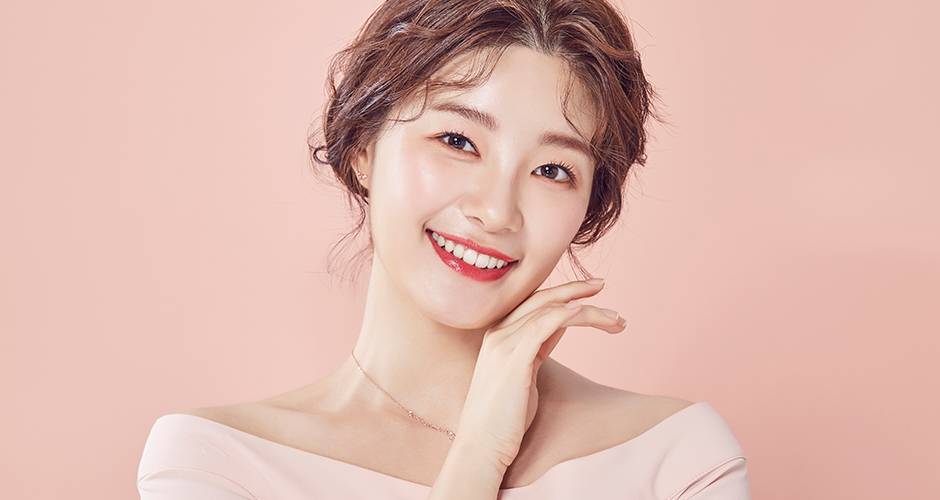
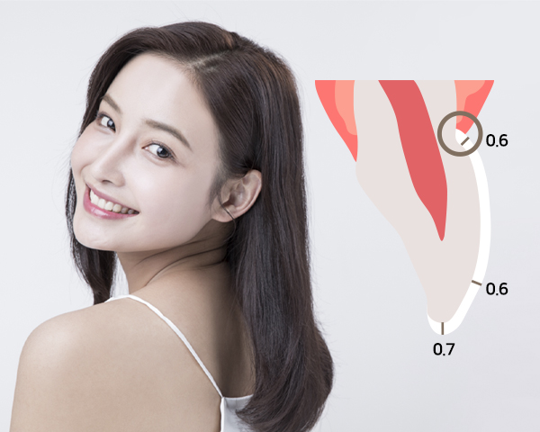
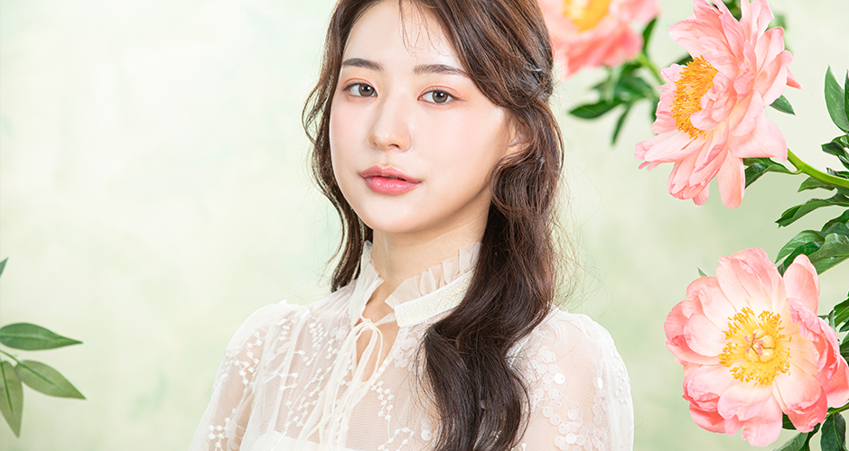

정밀 검사
치료 전 검사를 통해
환자분의 치아, 잇몸상태를 파악합니다
YONSEI HIVE DENTAL CLINIC
라미네이트란 자연치를 최대한 보존하는 최소한의 삭제를 통해
치아의 건강과 심미적 측면을 모두 고려한 시술로 치아의 바깥면을 얇게 삭제하거나 다듬어
손톱모양같은 세라믹 인공치아를 삭제된 면에 붙이는 방법입니다.

치아의 겉표면을 0.5 ~ 0.7mm 삭제한 후 인조 손톱 모양의 도재를 붙이는 라미네이트 시술에 대한 관심이 뜨겁습니다. 특히 외모가 중요한 연예인들의 경우에도 라미네이트를 받는 사례가 많은 편입니다.
라미네이트는 예쁘지 않아 고민이었던 여러분의 앞니 고민을 아주 빠르게 해결해드릴 수 있습니다. 기존 보철물에 비해 치아를 다듬는 양이 적어 원래의 내 치아를 최대한 보존할 수 있는 것 또한 라미네이트의 장점 입니다.

라미네이트는 최소한의 치아 삭제를 통해 치아의 심미성을 높여 줄 수 있는 것이 장점입니다.
특히, 자연치아색에 가까워 자연스럽고 강도까지 우수하여 치아 심미성형에 효과적이어서
치아가 삐뚤거나 누럴 경우 짧은 시간에 치료가 가능합니다.
자연 치아
색상과 유사하여
심미적으로 우수
다른 보철
치료에 비해
치아 삭제량이 적음
레진보다
강도 및 마모성이
우수함
잇몸 변색과
수축이 없음

치아의 표면(법랑질)을 다듬는 방식
치아의 형태나 색상변화 가능

치아의 법랑질에서 상아질까지 삭제
치아의 크기에서 형태, 색상 모두 변화가능

치아의
변색
배열이 안
좋은 경우
앞니 사이가
벌어진 경우
치아가 크거나
작은 경우
깨진
치아

치료 전 검사를 통해
환자분의 치아, 잇몸상태를 파악합니다

충분한 상담을 통해 환자분의
이미지에 맞는
치아를 구현하기 위한
치료계획을 계획합니다

라미네이트를 접착하기 위해
자연치아를 훼손하지
않는 선에서
소량의 치아다듬기를 진행합니다

원내 기공소에서 담당 의료진과의
협의를 통해
환자분에게 꼭 맞는
라미네이트를 제작합니다

완성된 라미네이트를 환자분께
보여드린 후
치아 앞면에 접착하여
라미네이트를 완성합니다